AnyPortrait > マニュアル > マスク
マスク
1.6.0
「AnyPortrait v1.6.0」では、従来の「クリッピングマスク」機能がさらに拡張されました。
大幅に強化された「マスク」機能は、メッシュのレンダリング順序とは無関係にマスクを作成して他のメッシュに渡すことができます。
また、マスク生成方式や渡されるプロパティなどをユーザーが自由に設定できます。
これにより、ユーザーは別々のシェーダやスクリプトを書かなくてもさまざまな表現が可能になります。
このページでは、「マスク」機能の基本的な仕組みと基本的な使い方について説明します。
また、新しく追加された「共有テクスチャ」についても説明します。
このページで取り上げられていないさまざまな機能とさまざまな活用方法を以下のマニュアルで一緒に確認してください。
- マスクとカスタムシェーダー
- マスクの組み合わせ
- マスクチェーン
- マスク専用メッシュ
- シースルー効果
マスクが動作するプロセス

AnyPortraitはマスクを実装するために「レンダリングテクスチャ（Render Texture）」を使用します。
マスクを作成してレンダリングに利用するプロセスを概略的に表現すると、上記の画像と同じです。
マスクとして機能するメッシュは「アルファマスクレンダリングテクスチャ」を生成し、生成された「レンダリングテクスチャ」はターゲットメッシュに渡されます。
ターゲットメッシュがレンダリングされると、「レンダリングテクスチャ」を利用して画像の一部がクリッピングされます。

先ほど取り上げたマスク動作に関するコンセプトをもとに、「AnyPortrait」では、どのようにこれを実装したのか、もう少し調べてみましょう。
縦方向はカメラへの一般的なレンダリングプロセスを意味し、横方向はマスクデータを転送するプロセスを意味します。
マスクメッシュがシェーダーを介してレンダリングする過程で、「アルファマスクシェーダー」を使った「レンダーテクスチャ」レンダリングも同様に行います。
「アルファマスクシェーダ」を使用してレンダリングを行う場合、基本レンダリング時に使用されるプロパティ値が利用されます。
「アルファマスクシェーダ」は「コマンドバッファ」を介して動作し、この過程で生成された「アルファマスクレンダテクスチャ（Alpha Mask Render Texture）」はターゲットメッシュに渡されます。
ターゲットメッシュは、「レンダーテクスチャ」を含む「マスクデータ」を受け取り、クリッピング機能を持つシェーダを介して画面にレンダリングされます。
要約すると、マスクをレンダリングするには、次の2つの手順を実行します。
(1) 「アルファマスクシェーダー」を使用して「レンダーテクスチャ」をレンダリングします。
(2) 「レンダリングテクスチャ」を含む「マスクデータ」をターゲットメッシュに渡してレンダリングします。
この方法を理解したら、「マスク」機能のさまざまなオプションがどのような役割を果たしているのかを簡単に知ることができます。
それでは、「マスク」を試してみましょう。
簡単なマスクの例
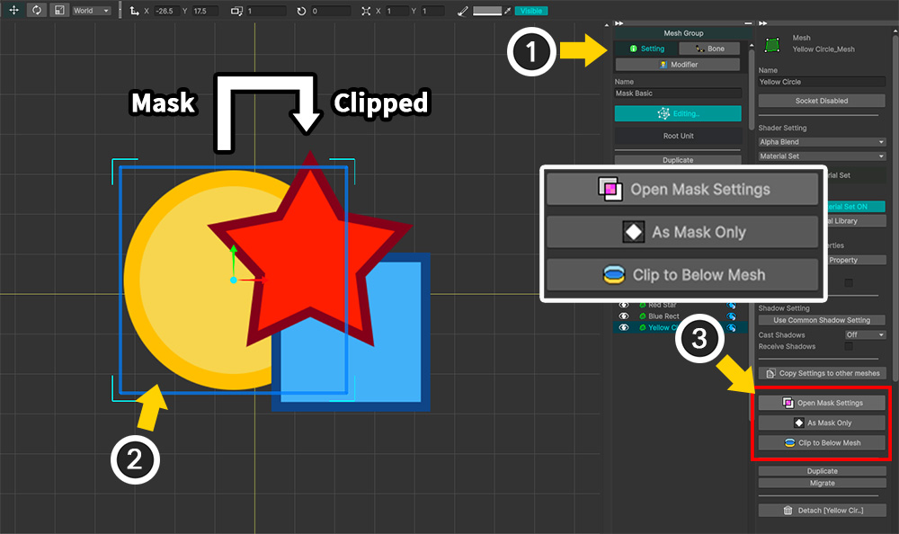
マスクをテストするために準備した簡単な例です。
「黄色の円形メッシュ（Yellow Circle）」をマスクとして、これを「赤い星形のメッシュ（Red Star）」に適用してみましょう。
従来のクリッピングマスクとは異なり、2つのメッシュの間には「青い四角メッシュ」があります。
(1) 「メッシュグループ」を選択し、「設定」タブを選択します。
(2) マスクの役割をするメッシュを選択します。 （任意のメッシュを選択できます。）
(3) メッシュを選択すると、マスクに関連するボタンが登場します。ボタンの中から「Open Mask Settings」ボタンを押します。
マスク機能に関連するボタンは次の役割を果たします。
- Open Mask Settings：「マスク設定ダイアログ」を開きます。
- As Mask Only：選択したメッシュを「マスク専用メッシュ」に設定します。 （関連ページ）
- Clip to Below Mesh : 選択したメッシュを下のレイヤーに位置するメッシュによってクリッピングするように設定します。
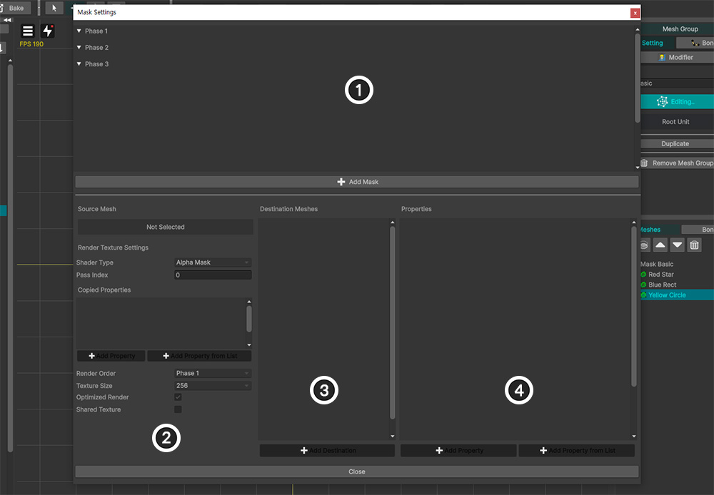
「AnyPortrait v1.6.0」で新しく追加された「マスク設定ダイアログ」が開きます。
このダイアログで、現在編集中のメッシュグループのすべてのマスク設定を編集できます。
1. マスクデータリスト：メッシュのマスクデータをすべて表示します。マスクデータは、レンダリング順に「フェーズ（Phase）」単位で囲まれて表示されます。
2. マスク生成オプション：マスク生成オプションです。
3. ターゲットメッシュリスト：選択されたマスクデータが渡され、到着するターゲットメッシュが表示されます。
4. 渡されるプロパティリスト：マスクデータは、レンダリングテクスチャを含むプロパティの組み合わせの形でターゲットメッシュに渡されます。この項目で渡されるプロパティを設定します。
各項目の詳細な説明は、以下で再度確認できます。
今はマスクを生成する基本過程について確認しましょう。

(1) 「Add Mask」ボタンを押して新しいマスクデータを作成します。

(2) マスクデータは「マスクを生成するメッシュ」を基準に作成されるので、マスクを生成するメッシュ（ここでは「Yellow Circle」）を選択します。
(3) 「Select」ボタンを押します。
メモ
このウィンドウでは、2つ以上のメッシュを選択して同時に追加できます。
複数のメッシュを追加した場合は、その数のマスクデータが生成されます。
マスクデータはメッシュごとに生成されるためです。
メッシュごとに2つ以上のマスクデータを持つことは可能です。

(1) 「Yellow Circle」メッシュのマスクデータが作成され、リストに追加されました。このデータをクリックして選択します。
(2) このマスクデータは「Alpha」チャンネルによるクリッピングを行うので、「Shader Type」の値を「Alpha Mask」に設定します。
(3) このマスクデータを受け取るメッシュを指定する必要があるので、「Add Destination」ボタンを押します。
(4) 「Red Star」メッシュを選択します。
(5) 「Select」ボタンを押します。

(1) マスクを受け取る対象として「Red Star」が登録されていることがわかります。
(2) マスクデータがどのプロパティの形式で渡されるかを設定する必要があります。
「Add Property」ボタンを押してプロパティ情報を設定しましょう。
シェーダの特定のプロパティを選択して設定したい場合は、「Add Property from List」ボタンを押すことをお勧めします。

(3) 新しいプロパティ情報が追加されました。
プロパティ情報のデフォルト値は「Alpha Mask Preset」タイプです。
これは、「Alpha Mask」を使った一般的なクリッピングレンダリングのためのプロパティをプリセットとして構成したものです。
この例では「Alpha Mask」をテストしたいので、デフォルト値をそのまま使用します。
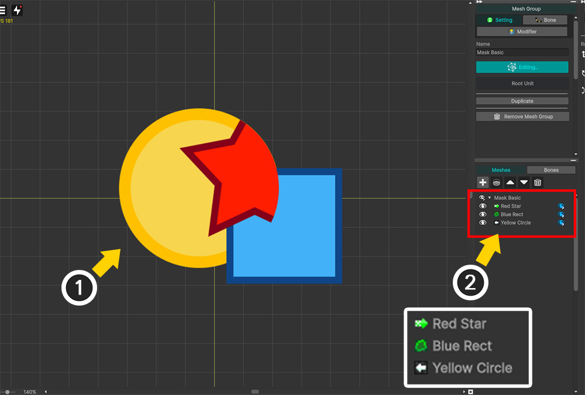
「マスク設定ダイアログ」を閉じてレンダリング結果を確認しましょう。
(1) 「黄色の円形メッシュ」をマスクとして「赤い星形メッシュ」がクリッピングされていることがわかります。
(2) 右側の「Hierarchy UI」を見ると、「マスクの送信／受信可否」によってアイコンが変わったことがわかります。
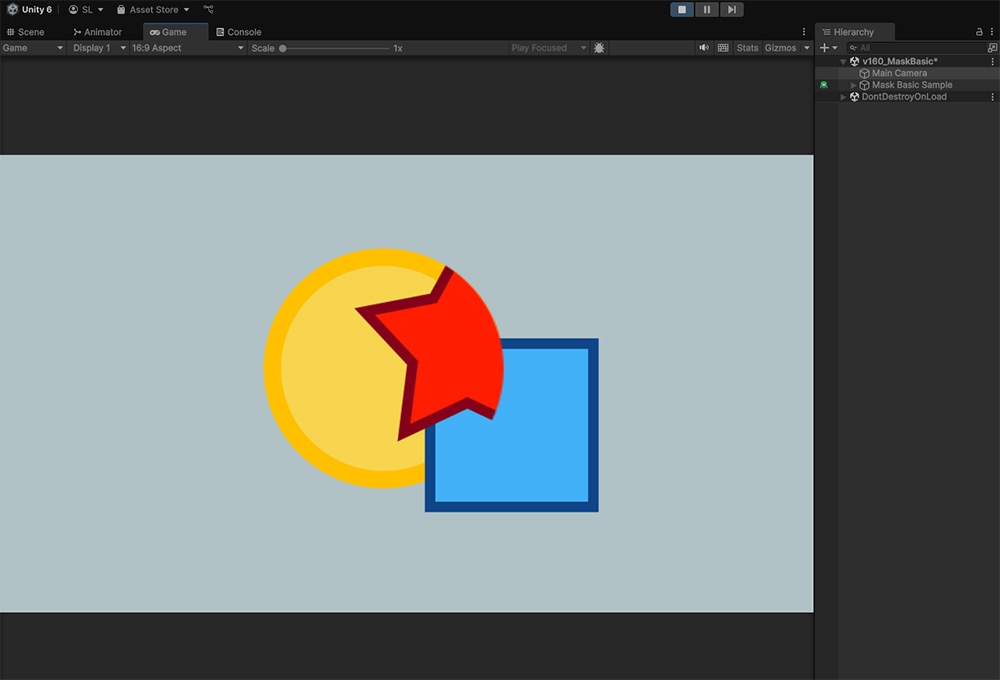
「Bake」を行い、Unityシーンでクリッピングレンダリング結果を見ることができます。
マスク設定ダイアログ
マスク設定ダイアログの各項目は次のとおりです。
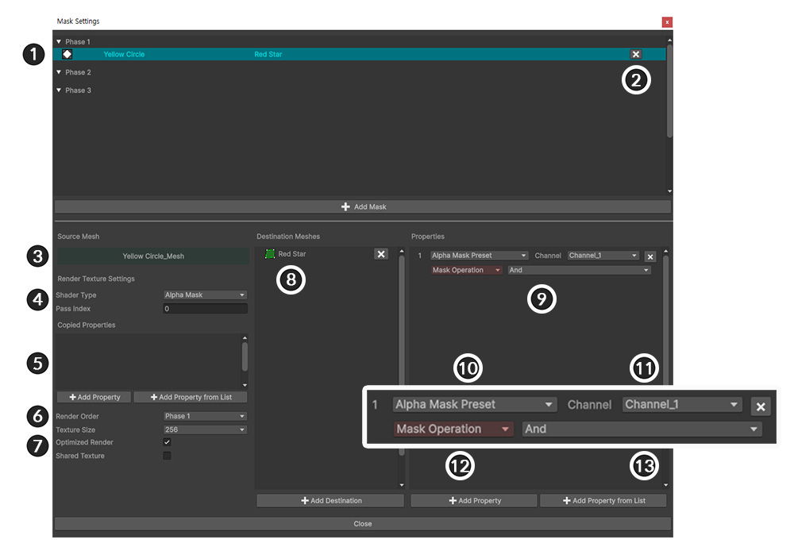
1. マスクデータ：マスクデータがリスト形式で出力されます。各項目は、「シェーダ、共有テクスチャ、チェーンの有無に応じたアイコン」、「マスクを生成するメッシュの名前」、「マスクを受け取るメッシュの名前」、「削除ボタン」で構成されます。
2. マスクデータ削除ボタン：このボタンを押すと、マスクデータを削除できます。
3. 選択したメッシュ名：選択したマスクデータが属するメッシュの名前です。
4. シェーダー情報：マスク用のレンダーテクスチャをレンダリングするシェーダーの種類と、実行される「Pass」を設定します。
5. プロパティコピー情報：レンダリングテクスチャを生成するシェーダは、マスク生成メッシュの基本シェーダプロパティの一部をコピーして利用します。コピーされるプロパティをユーザーが追加できます。
6.レンダリング順序：レンダリングテクスチャをレンダリングする順序を「フェーズ（Phase）」単位で指定できます。 （関連ページ）
7. レンダーテクスチャのプロパティ：レンダリングテクスチャに作成するためのオプションです。 「テクスチャのサイズ」、「最適化されたレンダリングの有無」、「共有テクスチャの有無」を設定できます。
8. ターゲットメッシュ：マスクデータを受け取るメッシュをリスト形式で表示できます。各項目の「削除ボタン」を押して除外できます。
9. 渡されるプロパティ：マスクデータがどのプロパティとしてターゲットメッシュに渡されるかを設定する項目です。事前設定されたプリセットを使用するか、カスタムプロパティに渡すように設定できます。
10. プロパティプリセットタイプ：マスクデータを転送するときに2つ以上のプロパティを介して転送しますが、これをプリセットとして設定すれば便利に設定できます。
11. プロパティ名またはチャンネル：シェーダのプロパティ名を設定します。プリセットによっては、名前の代わりにチャンネルを設定できます。
12. プロパティ値のタイプ：渡されるプロパティの値がどのタイプであるかを設定します。そのタイプはシェーダーのタイプと同じでなければなりません。特殊なデータ値を取得するタイプもあります。
13. プロパティの値：シェーダに渡される実際の値です。

渡されるプロパティは、プリセットの種類によって大きく3つの方法に分けられます。
1. Alpha Mask Preset : 「Alpha」値によるクリッピングレンダリングを行うデフォルトプリセットです。 4つのチャンネルとマスクの組み合わせ演算子を設定できます。 （関連ページ）
2. Custom : これは、ユーザーがプロパティを1つずつ直接設定する方法です。プロパティの名前と値のタイプ、渡される値を直接設定する必要があります。
3. See Through Preset : 「シースルー効果（See-Through）」のための特殊プリセットです。色と透過率を渡します。（関連ページ）
プリセットのプロパティ
「マスク設定ダイアログ」では、シェーダーを知らないユーザーも簡単に使用できるように、マスクのプロパティをプリセット形式に設定できます。
シェーダを作成したい人がいる場合は、マスクのプロパティプリセットがどのプロパティをターゲットにしているのかを知る必要があります。
「Alpha Mask Preset」の場合は、4つのチャンネルで区切られたプロパティにデータを渡します。
（各プロパティ名の最後のxは1〜4のチャンネル値を代入します。）
- _MaskRatio_x：これは、そのチャンネルを使用している場合は1、そうでない場合は0の値を持ちます。
- _MaskTex_x：アルファマスクレンダリングテクスチャが渡されるプロパティです。
- _MaskScreenSpaceOffset_x：レンダーテクスチャのUVを計算するための属性です。
- _MaskOp_x：アルファマスクを組み合わせるときに使用される演算方式です。 0から3の値を持ち、それぞれ「AND」、「OR」、「Inverse AND」、「Inverse OR」を意味します。
「See Through Preset」の場合は、透過度を決定する Alpha 値とともにプロパティを渡します。
- _SeeThroughRatio：シースルー効果が使用されている場合は1、そうでない場合は0の値を持ちます。
- _SeeThroughTex：レンダーテクスチャが渡されるプロパティです。このレンダリングテクスチャは通常、デフォルトのシェーダを介してレンダリングされます。
- _SeeThroughScreenSpaceOffset：レンダーテクスチャのUVを計算するための属性です。
- _SeeThroughAlpha：透過度に対応する値として、0～1の間の値を持ちます。制御パラメータと連動することが可能です。
「Custom」の場合、ユーザーは個々のプロパティを直接指定して値を渡します。
プロパティのタイプと渡される値を設定できます。
設定可能なプロパティのタイプは次のとおりです。
- Render Texture：マスクとして作成されたレンダーテクスチャが割り当てられます。
- Screen Space Offset：レンダリングテクスチャのUVを計算するために自動的に生成される「Vector」タイプの値が割り当てられます。
- Mask Operation：アルファマスク演算方式です。「Enum」タイプに設定でき、実際には「0、1、2、3」の「Float」の値が割り当てられます。
- Mesh Color：モディファイアなどによって計算されたメッシュの色値です。
- Float, Integer, Vector：ユーザーが設定した値をタイプに合わせて渡します。制御パラメータと連動することもできます。
- Texture：ユーザーが設定したテクスチャをプロパティに渡します。
- Color：ユーザーが設定した色値をプロパティに渡します。
- Render Texture VR EyeLeft / EyeRight：「VR」環境でマスクとして生成されたレンダリングテクスチャです。 「左、右」のペアをすべて指定する必要があります。
これらのプロパティーがシェーダー内でどのように処理されるかは、「カスタムシェーダー」のマニュアルで見ることができます。
複数のメッシュが共通のマスクを作成

従来のクリッピングマスクは、1つのメッシュが作成したマスクを1つまたは複数のメッシュに渡すように動作しました。
改善された「マスク」機能に追加された「共有テクスチャ（Shared Texture）」オプションを使用して、複数のメッシュが共通のマスクを作成することが可能になりました。
「共有テクスチャ」オプションを有効にすると、メッシュは同じレンダリングテクスチャをターゲットにレンダリングします。
（このとき、レンダリングテクスチャとしてレンダリングするための各メッシュのシェーダは、異なる設定にすることができます。）
このように作成された「共有レンダリングテクスチャ」は、一括してターゲットメッシュに渡されます。

共有テクスチャを試すために、上記の例を用意しました。
(1) 4つのパズルピース形状のマスク用メッシュがあります。
(2) キャラクターイラストが描かれた1つのメッシュにマスクを適用してみます。

(1) メッシュグループを選択し、「Setting」タブを選択します。
(2) マスクとなるメッシュのいずれかを選択します。（他のメッシュを選択しても関係ありません。）
(3) 「Open Mask Settings」ボタンを押します。
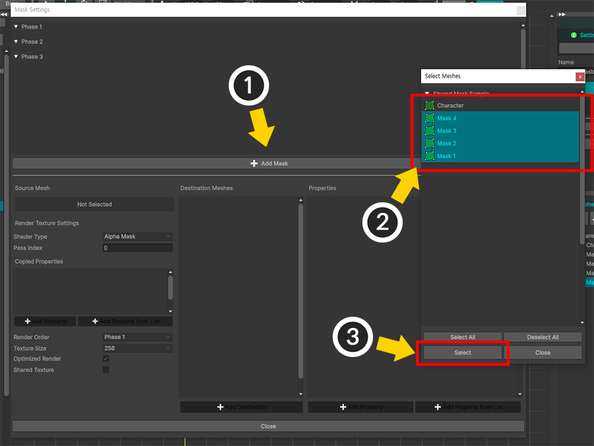
(1) 「Add Mask」ボタンを押します。
(2) 4つのパズルピースメッシュがマスクを作成するので、 Ctrl キーを押しながらクリックして4つのメッシュを選択します。
(3) 「Select」ボタンを押します。
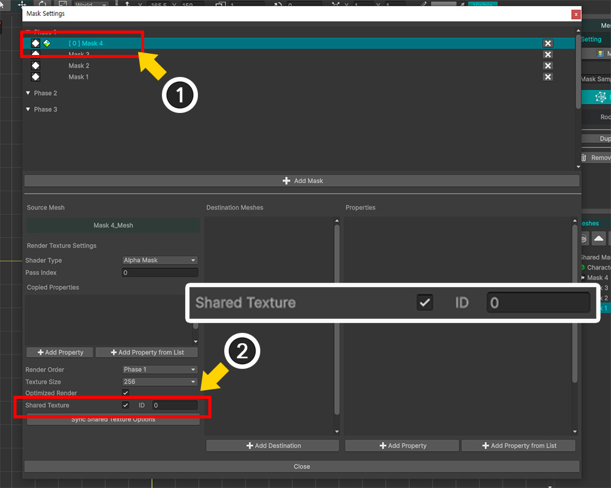
(1) 追加した4つのマスクデータの1つを選択します。
(2) 「Shared Texture」オプションのチェックボックスを押して有効にし、「ID」を指定します。ここではデフォルトの「0」をそのまま使用しました。
「共有テクスチャ」は「ID」値によって参照されます。
したがって、同じレンダリングテクスチャをレンダリングするには、そのメッシュのレンダリングテクスチャを作成するオプションが同じ「ID」値を持つ必要があります。
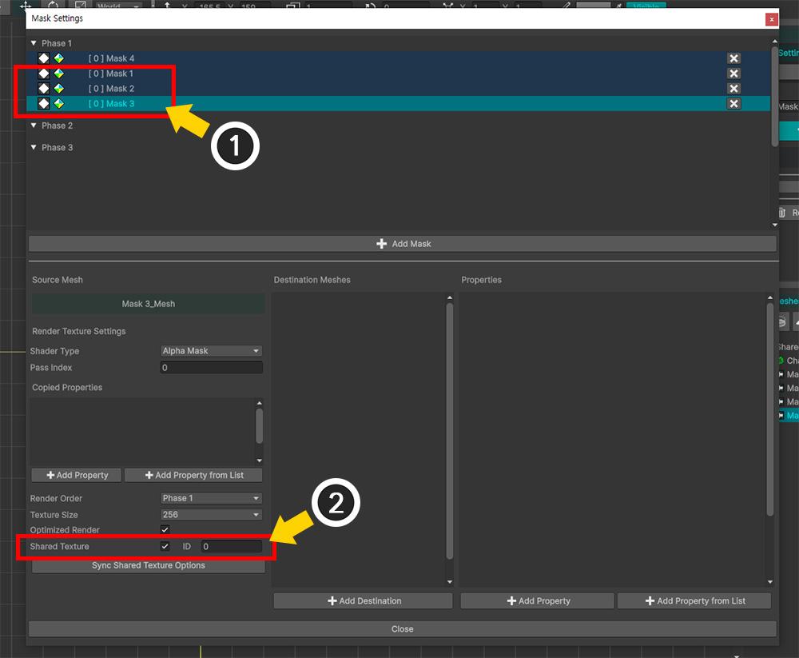
(1) 残りのマスクデータを1つずつ選択します。
(2) 同じように「Shared Texture」を有効にし、同じ「ID」値を持つように設定します。 （ここでは「0」）

(1) 「共有テクスチャ」でマスクを作成すると、上記のアイコンがリストに表示されます。
また、同じ「ID」を持つマスクデータのリスト項目の背景色が同じになります。
(2) マスクデータのいずれかを選択します。
(3) 「Add Destination」ボタンを押します。
(4) マスクを受け取るメッシュ（ここでは「Character」）を選択します。
(5) 「Select」ボタンを押します。

(1) 「Character」メッシュがマスク転送対象リストに登録されました。
(2) 「Add Property」ボタンを押してプロパティ情報を生成します。
(3) 「Alpha Mask Preset」タイプのプロパティ情報が追加されました。
(4) これで、「共有テクスチャ」を使用してクリッピングレンダリングの準備ができました。
メモ
「共有テクスチャ」を使用する場合、マスク転送に関連するオプションと情報を設定する作業は、基本的にマスクデータの1つだけを実行できます。
マスクデータの設定をまとめて一括してデータをターゲットに渡すからです。
メッシュごとに持つ特別なプロパティ値（メッシュの色など）を渡したい場合にのみ、マスクデータごとにプロパティ情報を設定できます。
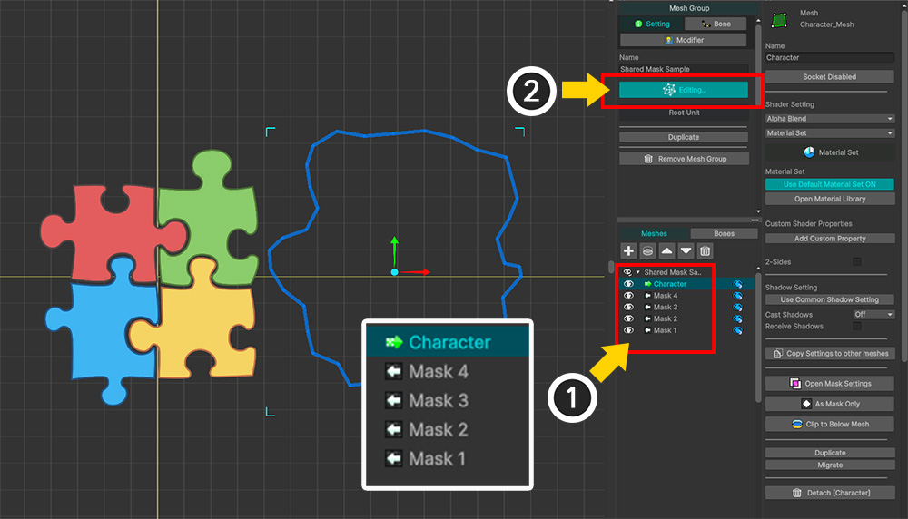
(1) 「マスク設定ダイアログ」を閉じて、「Hierarchy UI」を確認すると、4つのメッシュがマスクを作成し、1つのメッシュがマスクを受け取ることがわかります。
(2) マスク結果を確認するために「Edit Default Transform」ボタンを押して「Character」メッシュを横に移動してみましょう。
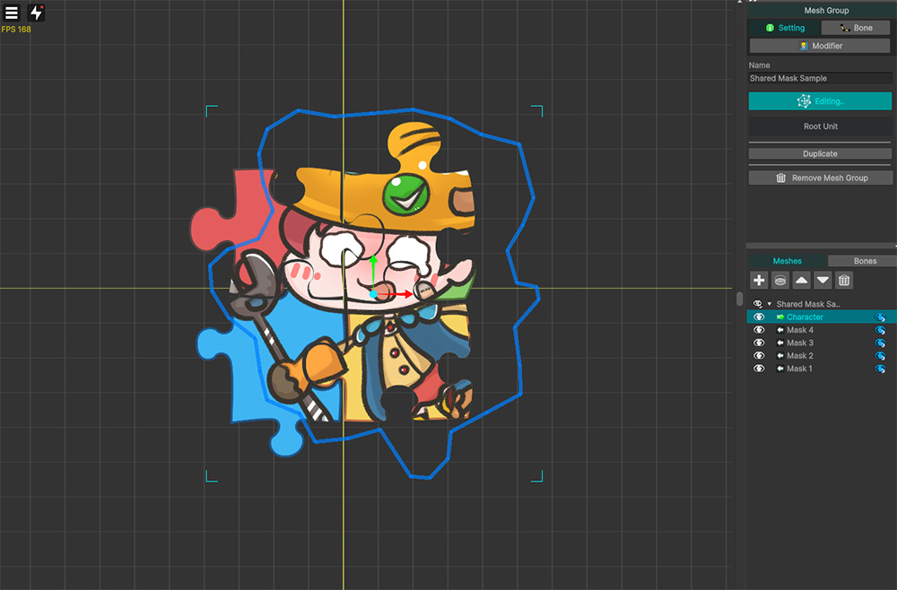
4つのパズルピースメッシュをマスクにしてクリッピングになるのを見ることができます。

「Bake」をしてUnityシーンでも確認してみましょう。
「AnyPortrait」エディタと同様の結果が表示されます。
ただし、マスクの品質がやや低いようです。
「共有テクスチャ」を使用すると、通常よりもマスクとなる範囲が大き くなる傾向があり、これによりマスクとしての「レンダ ルテクスチャ」解像度が品質に影響を与えます。

(1) 「マスク設定ダイアログ」を開き、マスクデータの1つを選択します。
(2) 「Texture Size」オプションの値が現在「256」になっています。
これは、マスクとしての「レンダリングテクスチャ」の解像度が「256x256」という意味です。
AnyPortraitの最適化機能により、低解像度のレンダーテクスチャでもかなり良い品質のマスクレンダリングになりますが、この場合にはそれが十分ではないようです。

(1) 「Texture Size」の値を今より大きい値に変更します。
オプションの値は次のとおりです。
- 64〜1024：各軸ごとの数字のサイズと同じ正方形のテクスチャ
- Full Screen：画面サイズと同じサイズのテクスチャ
- Half Screen / Quarter Screen：画面サイズから各軸あたり50％、25％に縮小されたテクスチャ
- FHD Size or Less / HD Size or Less：テクスチャの短軸の長さが最大1080、720の範囲内で可能な画面サイズと同じテクスチャ
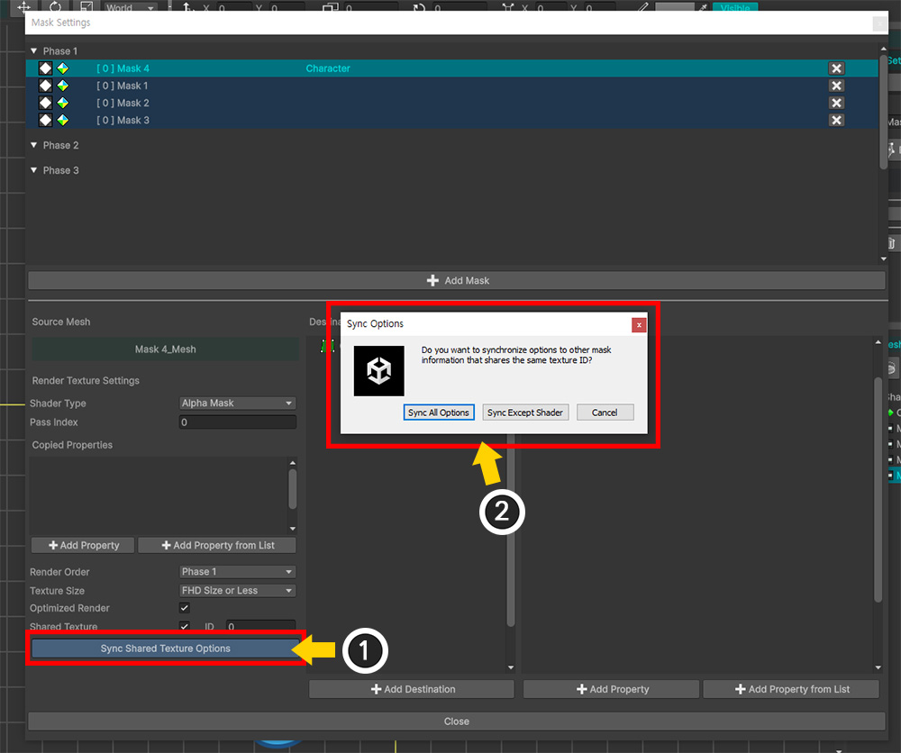
「レンダリングテクスチャ作成オプション」は、マスクデータごとにそれぞれ設定できますが、この場合は、すべてのマスクデータが同じオプション値を持つ必要があります。
(1) 「Sync Shared Texture Options」ボタンを押します。
(2) オプション同期に関するメッセージが表示されます。 「Sync All Option」ボタンを押して、レンダーテクスチャの作成に関するすべてのオプションを別のマスクデータにコピーします。
「Sync Except Shader」ボタンを押すと、レンダリングテクスチャをレンダリングするシェーダ情報はコピーされません。

もう一度「Bake」をしてUnityシーンに戻りましょう。
これで、マスクの品質がかなり改善されていることがわかります。
レンダーテクスチャの品質最適化
「マスクデータ」のオプションのうち「Optimized Render」項目をチェックすると、低解像度でもかなり良質のマスクがレンダリングされることがわかります。
このオプションが有効になっていると、マスクとなるメッシュの範囲を計算して、フルスクリーンでそのメッシュに対応する部分のみをクロップしてレンダリングテクスチャを作成およびレンダリングします。
これにより、マスクメッシュが画面で占める割合が大きくない限り、低解像度のレンダーテクスチャでも十分に良質のマスクレンダリングが可能です。
既存の「クリッピングマスク」の場合、このオプションは常に有効になっています。
ただし、次の場合、この最適化機能は機能しません。
- キャラクターをレンダリングするカメラが「Perspective」方式で、キャラクターのビルボード設定が有効になっていない場合
- 2つ以上のカメラがキャラクターをレンダリングしているとき、一部のカメラが「Perspective」方式の場合
- 2つ以上のカメラがキャラクターをレンダリングしているとき、一部のカメラがキャラクターを正面から見ていない場合
- 「VR」環境の場合
- 「マスクチェーン」が発生した場合（送信、受信データともに該当）
次の場合は、最適化機能が動作してもオプションを無効にすることをお勧めします。
- マスクを送受信するシェーダが「画面座標系（Screen Space）」の値を利用する場合
- メッシュのサイズが大きく、レンダリングテクスチャの解像度が大きくなければならず、そのため最適化が不要な場合
クリッピングマスク
隣接するメッシュでマスクを設定する従来の「クリッピングマスク」機能も同様に設定して使用できます。
「クリッピングマスク」を設定したら、「マスク設定ダイアログ」でどのように見えるかを確認しましょう。

(1) キャラクターの口部分のメッシュです。
(2) 「Teeth」メッシュと「Tongue」メッシュが「Mouth」メッシュからクリッピングされなければなりません。

(1) 「Tongue」メッシュを選択します。
(2) 「Hierarchy UI」の下にあるメッシュから「クリッピングを受けるボタン」を押します。
(3) 右側の「Clip to Below Mesh」ボタンを押しても同じに設定されます。
「Teeth」メッシュについても同様に設定します。

(1) クリッピングが正しく設定されていると、キャラクターの口の形が正常にレンダリングされます。
(2) 「Hierarchy UI」では、メッシュのアイコンが上記のように変更され、クリッピングされていることがわかります。
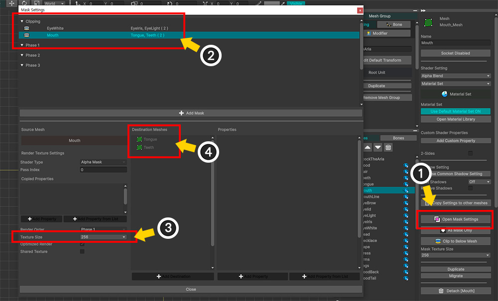
(1) 「Open Mask Settings」ボタンを押します。
(2) 「Clipping」カテゴリにクリッピングマスク情報が追加されていることがわかります。
(3) レンダーテクスチャオプションのほとんどは設定できません。「Texture Size」オプションのみを設定できます。
(4) クリッピングされるターゲットメッシュがリストに表示されます。
クリッピングマスクは、「隣接メッシュにのみマスクを渡す」という特別なルールが適用されます。
このルールによってレンダリング順序に関連する追加の動作があるため、「マスク設定ダイアログ」では追加/削除はできません。